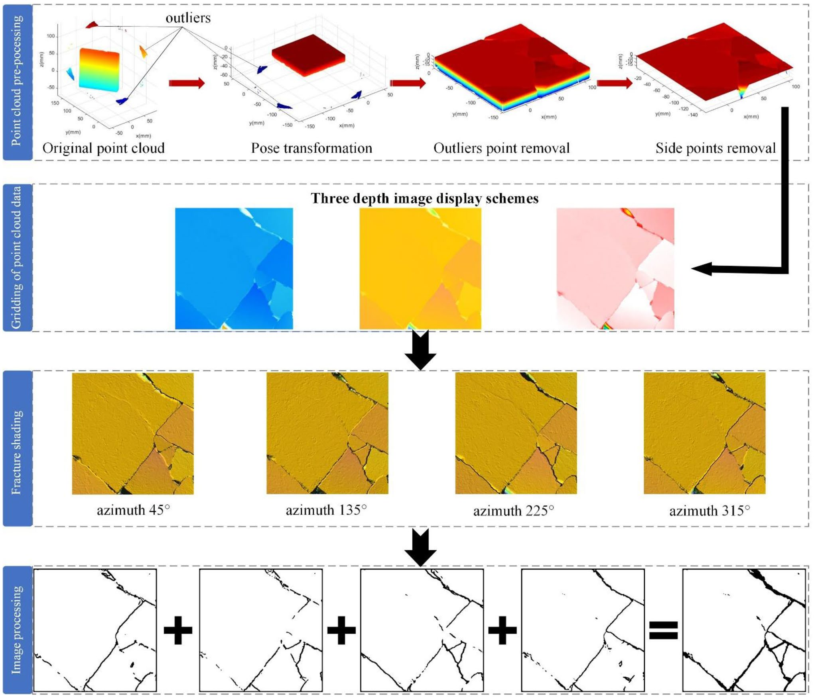
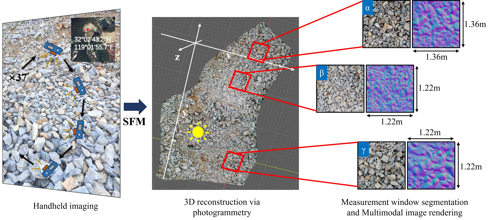
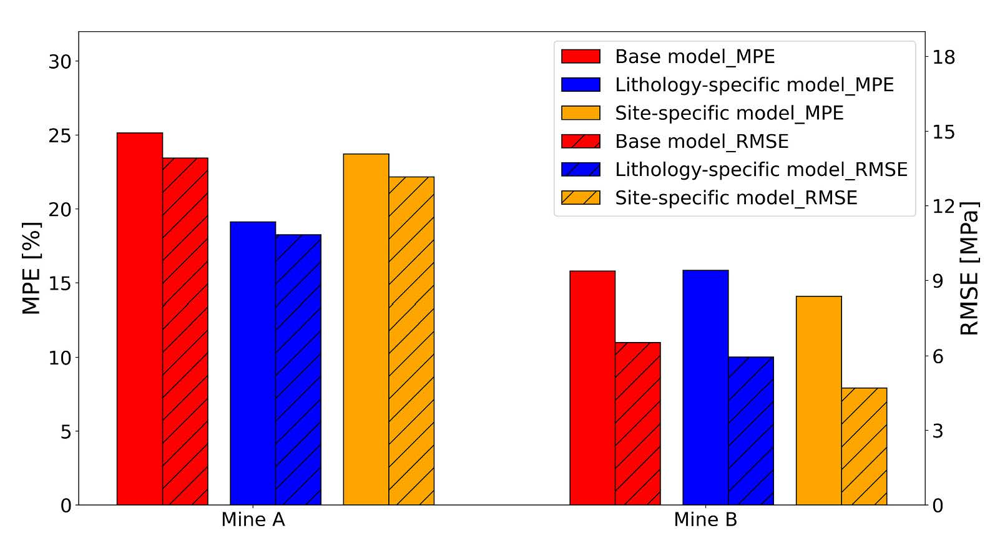
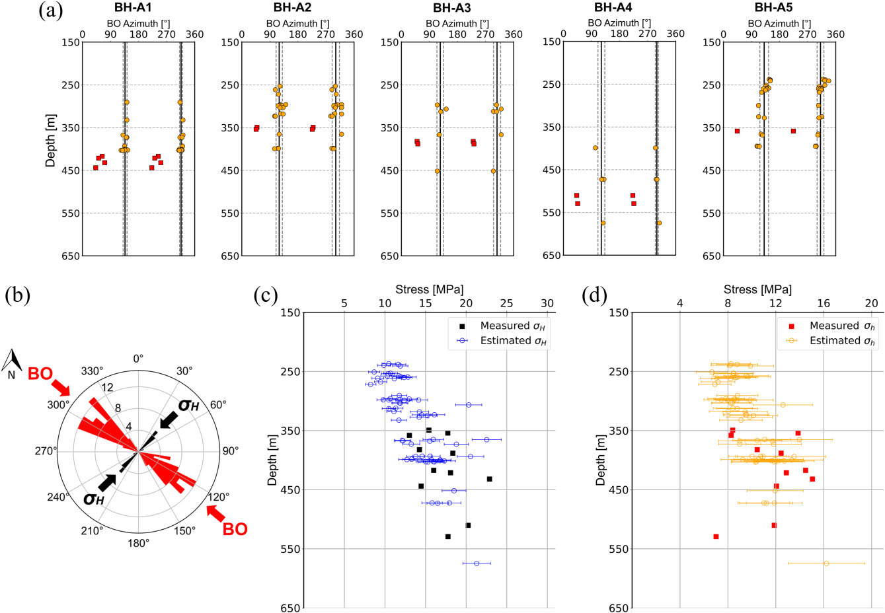

这里汇集了团队的代表性论文与研究产出。每一篇成果，都是 AI 驱动岩土工程智能向前迈出的重要一步。

由于岩石中矿物颗粒在尺寸、形状、排列方式和结构连接上的差异，实验室尺度下岩石样本表面的彩色图像通常十分复杂，采用传统图像处理算法时容易出现误判与信息损失。为提升裂隙提取精度，本文提出了一种基于图像处理的方法，从三维点云中提取裂隙。研究首先通过 Kriging 插值对岩石表面点云进行网格化，生成高精度原始深度图像；随后利用 hill shading 方法进一步强化裂隙表达；最后从深度图像中提取裂隙并与彩色图像进行对比。结果表明，该方法显著提升了裂隙骨架的完整性并降低了误差率；结合彩色图像后，还可有效区分真实物理裂隙与其他类似裂隙的表面特征。

岩石碎块粒度分析在采矿工程中具有关键意义。然而，传统非接触式图像分析方法通常仅依赖 RGB 图像，极易受到光照变化、阴影干扰和碎块纹理差异的影响，导致模型精度与泛化能力受限，并常常需要在不同场景中重新训练。针对这些问题，本文引入法线图，并系统分析其在表达岩石碎块特征方面的优势。同时，我们提出了一种名为 Adaptive Feature Recombination Network（AFRNet）的多模态实例分割框架。AFRNet 通过模态有效性感知机制自适应地引导特征融合，并抑制不可靠模态带来的干扰。实验结果表明，引入法线图后，模型在低照度和阴影干扰等退化环境中的分割精度与鲁棒性均得到显著提升；最终得到的粒度分布曲线与人工标注结果偏差小于 10%，验证了该方法具备零额外迁移成本与良好的工程适用性。

本研究针对澳大利亚煤矿中常用的经验型岩石强度估算方法进行改进，构建了人工神经网络（ANN）模型，以钻孔地球物理测井数据预测单轴抗压强度（UCS）。研究将 274 组实验室 UCS 测试结果与声波、伽马、中子、孔隙度及密度测井数据进行配对，并据此训练了一个采用 Levenberg-Marquardt 学习算法的双隐层 ANN 模型。与传统的声波-UCS 拟合公式相比，ANN 显著降低了预测误差。进一步构建的按岩性和矿区区分的模型还带来了额外的精度提升，说明岩性差异与局部地质条件对 UCS 估算及后续岩土工程分析具有重要影响。

由于地下活动对地应力场高度敏感，而传统应力测试方法又存在一定局限，井壁崩落（BO）近年来越来越多地被用于估算原位应力大小。本文开发了一种新的反向传播神经网络模型，用于根据多尺度井壁崩落数据同时估算最大与最小水平主应力。研究收集了 150 组来自预应力真三轴实验室试验的数据，以及 44 组来自澳大利亚矿区和文献资料的现场数据，用于模型开发与验证。结果显示，该模型对最大水平主应力的平均绝对百分比误差低于 8%，对最小水平主应力的误差低于 20%，显著优于此前同类方法。研究表明，利用可从钻孔地球物理测井中便捷获取的输入参数，该模型能够提供可靠且准确的应力估算结果。